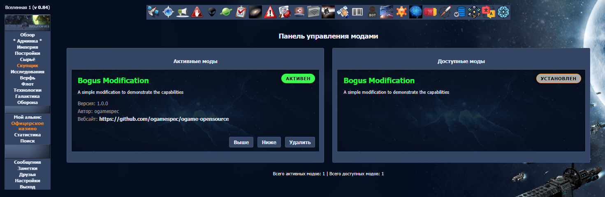

Руководство разработчика модификаций
Модификации (моды) расширяют игру, не меняя исходный код базового
движка. Мод — самодостаточная папка в game/mods/, содержащая
класс-наследник GameMod (ядро: game/core/mods.php),
метаданные, локализацию, страницы и ресурсы.
В репозитории живут четыре эталонных мода:
| Мод | Чему учит |
|---|---|
BogusMod | Минимум: колонка БД, свой ресурс, пункт меню, страница, периодическое событие |
GalaxyTool | Инструмент: игровая страница + раздел админки, 6 языков |
SpaceStorm | Новое здание, правки глобальных таблиц, экономические и боевые хуки, тесты |
DeepSpaceHorror | Кастомные объекты галактики, новые юниты, кастомные миссии флота, тесты |
2. Структура папки мода
| Путь | Назначение |
|---|---|
main.php | Обязателен. Константы мода и класс <ИмяМода> extends GameMod |
manifest.json | Обязателен. Метаданные для админки |
Readme.md | Описание мода (как в DeepSpaceHorror/Readme.md) |
img/bg.png | Картинка-подложка (600×200) карточки мода в админке |
loca/<lang>_<lang>/… | Локализация мода |
pages/, pages_admin/ | PHP-файлы игровых и админ-страниц |
testing/ | Собственный PHPUnit-набор мода |
Папки с исходниками (pages/,pages_admin/,loca/) закрываются от браузера файлом.htaccess:Order allow,deny Deny from all. Папкаimg/остаётся открытой — на неё ссылаются страницы.
3. manifest.json
{
"name": "My Awesome Mod",
"version": "1.0.0",
"author": "YourName",
"description": "Добавляет новые возможности для игроков",
"website": "https://github.com/yourname/mod-name"
}
По этим данным админка строит карточку мода (функция ModsGetInfo).
Если manifest.json отсутствует — мод считается невалидным и убирается из списка.
4. main.php и класс GameMod
Имя класса = имя папки с заглавной буквы (ModInitOne делает
ucfirst($modname)). Три обязательных метода:
| Метод | Когда | Что делает |
|---|---|---|
install() | один раз при активации | колонки/таблицы БД (ALTER TABLE под LockTables()), свои события очереди |
uninstall() | один раз при деактивации | убирает свои колонки, события, объекты |
init() | каждый запрос, пока мод активен | loca_add(); дополнение глобальных таблиц движка |
public function install() : void {
global $db_prefix;
LockTables();
$query = "ALTER TABLE ".$db_prefix."users ADD COLUMN tritium INT DEFAULT 0;";
dbquery ($query);
// своё периодическое событие, если ещё не заведено
$query = "SELECT * FROM ".$db_prefix."queue WHERE type = '".QTYP_ADD_TRITIUM."'";
$result = dbquery ($query);
if ( dbrows ($result) == 0 ) {
AddQueue (USER_SPACE, QTYP_ADD_TRITIUM, 0, 0, 0, time(), 3600);
}
UnlockTables();
}
Глобальные таблицы, которые мод дополняет в init()
Объявлены в game/core/techs.php и game/core/prod.php.
| Переменная | Содержимое |
|---|---|
$buildmap / $resmap / $fleetmap / $defmap / $rakmap | ID построек / исследований / кораблей / обороны / ракет |
$initial | Стоимость объектов: $initial[GID] = [GID_RC_METAL=>…, 'factor'=>N] |
$UnitParam | Характеристики юнита: [структура, щит, атака, груз, скорость, расход] |
$RapidFire | Скорострел: $RapidFire[$gid][$target] = N |
$requirements | Дерево требований: $requirements[GID] = [GID_B_RES_LAB=>3] |
$CanBuildTab | Что строить для типа объекта: $CanBuildTab[PTYP_PLANET][] = GID |
$PlanetProd | Правила производства/потребления по объектам |
Пример — «добавить здание» (из SpaceStorm): колонка в
planets (install), та же колонка в install_tabs_included(),
в init() — $buildmap[], $initial[],
$requirements[], $CanBuildTab[]; локали NAME_<GID> /
LONG_<GID>; картинка через get_object_image().
5. Страницы мода
Роутер игры — JSON game/router.json. Хук route вызывается
в game/index.php после загрузки роутера:
public function route(array &$router) : bool {
$router['tipoftheday'] = array (
'path' => "mods/BogusMod/pages/tipoftheday.php",
'loca' => [ "menu" ]
);
return false; // не останавливаем цепочку
}
Ключи записи роутера: path, loca[] (обязательны);
external (страница для гостей), menu/header
(скрыть левое меню/верхнюю панель), bare (без обрамления),
mvc (страница — класс Page), admin_update_queue,
update_activity, redirect_page/redirect_sec.
По умолчанию страница с сессией получает стандартное обрамление игры.
Классический файл страницы просто включается движком; доступны глобалы
$now, $aktplanet, $session, $GlobalUser,
$GlobalUni, $PageMessage, $PageError. Пример —
весь файл pages/tipoftheday.php из BogusMod:
<?=loca("BOGUS_MOD_TIP1");?>
Админка — свой роутер pages_admin/admin_router.json; разделы
мод добавляет хуком route_admin, класс страницы называется
Admin_<Раздел> и наследует Page (пример:
GalaxyTool/pages_admin/admin_galaxytool.php).
6. Локализация
Секции локали подключаются через loca_add($section, $lang, $dir);
для мода третий параметр — __DIR__, файлы лежат в
loca/<lang>_<lang>/<section>.php:
public function init() : void {
global $GlobalUni;
loca_add ("bogusmod", $GlobalUni['lang'], __DIR__);
}
<?php $LOCA["ru"]["BOGUS_MOD_TRITIUM"] = "Тритий"; $LOCA["ru"]["BOGUS_MOD_MENU_ITEM"] = "Совет дня"; ?>
Чтение: loca($key) (текущий язык) и loca_lang($key, $lang).
Имена игровых объектов — ключи NAME_<GID> / LONG_<GID>;
свои ключи лучше с префиксом мода (STORM_*, LEVI_*).
7. События в очереди
Вся временная логика — очередь событий (таблица queue,
game/core/queue.php). API: AddQueue(),
RemoveQueue(), ProlongQueue(). Событие с незнакомым
ядру type передаётся хуку update_queue; если ни один мод
его не обработал — событие удаляется с записью в лог.
public function update_queue(array &$queue) : bool {
global $db_prefix;
if ($queue['type'] === QTYP_ADD_TRITIUM) { // "AddTritium"
$query = "UPDATE ".$db_prefix."users SET tritium = tritium + 1;";
dbquery ( $query );
ProlongQueue ($queue['task_id'], 3600); // продлить: событие периодическое
return true; // обработано
}
return false; // не наше — дальше по списку
}
Глобальные события заводятся на технический аккаунт USER_SPACE.
Обработка очереди запускается действиями игроков и cron.php.
8. Хуки
8.1. Механизм и правила
Хуки — методы GameMod, вызываемые ядром. Они исполняются для всех
активных модов в порядке активации; первый вернувший true
останавливает цепочку (false — «продолжить»). Параметры-ссылки —
выходные данные. Объявления всех хуков: game/core/mods.php.
8.2. Меню, ресурсы, бонусы
add_menuitems(&$json) — пункт левого меню
(типы: internal, external, img,
popup, internal_buggy);
public function add_menuitems(array &$json) : bool {
array_insert_after_key ($json, "options", "tipoftheday",
array ('type' => 'internal', 'page' => 'tipoftheday', 'loca' => 'BOGUS_MOD_MENU_ITEM') );
return false;
}
add_resources(&$json, $planet) — ресурс в панели ресурсов
(запись: skin, img, loca, val,
color); add_bonuses(&$bonuses) — бонус в шапке
(запись: href, img, alt, overlib).
8.3–8.4. Контент и хуки страниц
begin_content()/end_content() — echo до/после контента
страницы. Хуки page_*:
| Хук | Что позволяет |
|---|---|
page_buildings_get_bonus($id, &$bonuses) | доп. бонусы объекта на страницах построек/инфо |
page_flotten1_get_bonus($param, &$bonuses) | бонусы первой страницы флота |
page_flotten2_planet_types(&$types) / page_flottenversand_ajax_spy_planets(&$types) | типы целей флота и шпионажа |
page_galaxy_custom_object($planet, &$info) | кастомный объект галактики: $info['overlib'] + true |
page_infos($id, &$planet) | доп. инфо объекта (можно echo) |
page_overview_get_bonus($param, &$bonuses) / page_resources_get_bonus($param, &$bonuses) | бонусы обзора и «Сырья» |
8.5. Изображения
get_object_image($id, &$img) (объект 120×120),
get_planet_small_image($type, &$img),
get_planet_image($type, &$img) — вернуть свой путь в
$img['path'] и true. Типы объектов галактики — в
game/core/defs.php; типы >= PTYP_CUSTOM (20001)
зарезервированы для объектов модов.
8.6. Экономика
bonus_prod($param, &$bonus)/bonus_cons(...) — мод
добавляет множитель в список факторов ($param содержит
uni, user, planet, rc);
prod_post_process(&$planet, &$eco) — пост-обработка балансов.
8.7. Постройки и исследования
can_build(&$info)/can_research(&$info) — после
стандартных проверок; запрет: $info['result'] = 'ключ_ошибки'; return true;.
build_end($planet_id, &$queue)/research_end(&$queue) —
завершение стройки/исследования.
8.8. Флот и шпионаж
fleet_available_missions($param, &$missions) — список миссий;
bonus_fleet_speed/bonus_fleet_cons/bonus_max_fleet —
правят $bonus['value']; bonus_technology($id, &$bonus) —
правят $bonus['level'] (шпионаж); spy_protection($args, &$bonus) —
защита цели ($args['planet'], $args['target_user']).
fleet_handler($param) — кастомные миссии флота: срабатывает для
неизвестных ядру миссий (>= FTYP_CUSTOM, 1000) из
Queue_Fleet_End. В $param — queue,
fleet_obj, fleet, origin, target.
Вернуть true, если миссия ваша. После вызова ядро удаляет строку флота и
событие — если миссия должна продолжаться (возврат), создавайте новый флот/событие сами.
8.9. Бой
battle_unit_stats($args, &$unit_param) — масштабирование
характеристик юнитов для конкретного боя (изменения временные, восстанавливаются
сразу после сериализации); battle_post_process(&$res) — после боя
(результат, раунды, $res['extra']).
8.10. База данных
install_tabs_included(&$tabs) — объявить колонки мода в схеме
(game/core/install_tabs.php): $tabs['users']['tritium'] = 'INT DEFAULT 0';.
add_db_row(&$row, $tabname) — докинуть поля при вставке через
AddDBRow; lock_tables(&$tabs) — таблицы в блокировку.
Доступны dbquery()/dbrows()/dbarray();
не забывайте префикс $db_prefix.
9. Расширенные сценарии
Кастомные объекты галактики (DeepSpaceHorror)
Объект — обычная строка planets с type >= PTYP_CUSTOM,
владелец — USER_SPACE; галактика рисует его отдельной колонкой
(EnumCustomPlanetsGalaxy, ShowCustomObjects). Мод задаёт
типы/юнитов/миссию константами, создаёт объекты в install(), регистрирует
юнитов в init(), отдаёт картинки хуками, показывает overlib хуком
page_galaxy_custom_object, обрабатывает бой в fleet_handler
и возрождение — событием очереди.
Мод-инструмент (GalaxyTool)
Своя страница игрока + раздел админки (Admin_GalaxyTool) + колонка
uni.galaxytool_update + еженедельное событие пересборки снимков галактики.
Шпаргалка «как добавить…»
| Хочу | Что делать |
|---|---|
| Ресурс-счётчик | колонка БД + add_resources + событие начисления |
| Здание | колонка planets + install_tabs_included + $buildmap/$initial/$requirements/$CanBuildTab + локали + картинка |
| Корабль / оборону | колонки fleet + $fleetmap/$UnitParam/$RapidFire |
| Объект галактики | тип >= PTYP_CUSTOM + планета USER_SPACE + хуки картинок/галактики |
| Страницу | route + add_menuitems + локали |
| Раздел админки | route_admin + класс Admin_<Mode> |
| Периодическое действие | AddQueue + update_queue + ProlongQueue |
10. Тестирование
Мод носит свой PHPUnit-набор в testing/ (так сделано в
SpaceStorm и DeepSpaceHorror):
game/mods/<Name>/testing/ ├── phpunit.xml # конфигурация набора ├── bootstrap.php # ядро + мод на in-memory SQLite ├── <Name>Test.php └── <Name>DbTest.php
bootstrap.php подключает vendor/autoload.php, задаёт
DB_CONNECTION=sqlite/DB_DATABASE=:memory:, делает
chdir в game/ и включает core/core.php и
main.php мода. Запуск:
vendor/bin/phpunit -c game/mods/SpaceStorm/testing/phpunit.xml
DB-тесты строят минимальную вселенную настоящими функциями
(CreateDBTables(), AddDBRow()). «Случайность» выносится в
переопределяемые методы (напр. Rnd() в DeepSpaceHorror).
11. Публикация и сопровождение
- Readme.md внутри мода — описание, установка, правила, список хуков (образец:
DeepSpaceHorror/Readme.md); - Версия — в
manifest.json; продумайте миграцию БД при изменении схемы; - Деактивация —
uninstall()возвращает игру в исходное состояние; - Совместимость — движок 0.84, версия ядра
$CoreVersion.
12. Админка и функции управления
Раздел Моды админки (admin_mods.php): слева — установленные
(порядок = порядок активации хуков), справа — доступные; карточка мода — фон
img/bg.png и метаданные:

Функции управления (game/core/mods.php): ModsInit(),
ModInitOne(), ModInstallOne(), ModsInstall(),
ModsRemove(), ModsMoveUp()/ModsMoveDown(),
ModsList(), ModsGetInfo().
Диспетчеры хуков: ModsExec, ModsExecArr,
ModsExecRef, ModsExecRefArr, ModsExecArrRef,
ModsExecRefRef, ModsExecIntRef, ModsExecRefStr —
обходят моды в порядке активации, останавливаются на первом true.
13. Сводная таблица хуков
| Хук | Точка вызова в ядре | Смысл |
|---|---|---|
route | index.php | страницы игры |
route_admin | pages_admin/admin.php | разделы админки |
update_queue | queue.php | кастомные события очереди |
add_resources | page.php | панель ресурсов |
add_menuitems | page.php | левое меню |
add_bonuses | page.php | бонусы в шапке |
lock_tables | db_mysql.php/db_sqlite.php | таблицы в блокировку |
install_tabs_included | db.php, admin_db.php | схема БД мода |
get_planet_small_image / get_planet_image / get_object_image | page.php | картинки объектов |
begin_content / end_content | page.php | контент до/после страницы |
add_db_row | db_mysql.php/db_sqlite.php | доп. поля вставляемой строки |
can_build / can_research | queue.php | запрет/разрешение |
build_end / research_end | queue.php | завершение стройки/исследования |
fleet_available_missions | fleet.php | список миссий флота |
fleet_handler | fleet.php | кастомная миссия флота |
prod_post_process | prod.php | пост-обработка производства |
battle_post_process / battle_unit_stats | battle.php | бой: после / до (параметры юнитов) |
page_buildings_get_bonus | buildings.php, b_building.php | бонусы объекта |
page_flotten1_get_bonus | flotten1.php | бонусы флота (шаг 1) |
page_flotten2_planet_types | flotten2.php | типы целей флота |
page_flottenversand_ajax_spy_planets | flottenversand_ajax.php | типы целей шпионажа (AJAX) |
page_infos | infos.php | инфо объекта |
page_galaxy_custom_object | galaxy.php | объекты галактики модов |
page_overview_get_bonus / page_resources_get_bonus | overview.php / resources.php | бонусы страниц |
bonus_technology | fleet.php, event_list.php | уровень технологии |
spy_protection | fleet.php | защита от шпионажа |
bonus_prod / bonus_cons | prod.php | множители производства/потребления |
bonus_max_fleet / bonus_fleet_cons / bonus_fleet_speed | fleet.php | флот: максимум/расход/скорость |
Объявления всех хуков с описанием параметров — в классе GameMod
(game/core/mods.php). Эта страница — краткая версия
wiki/ru/mods.md.